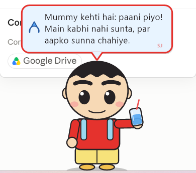
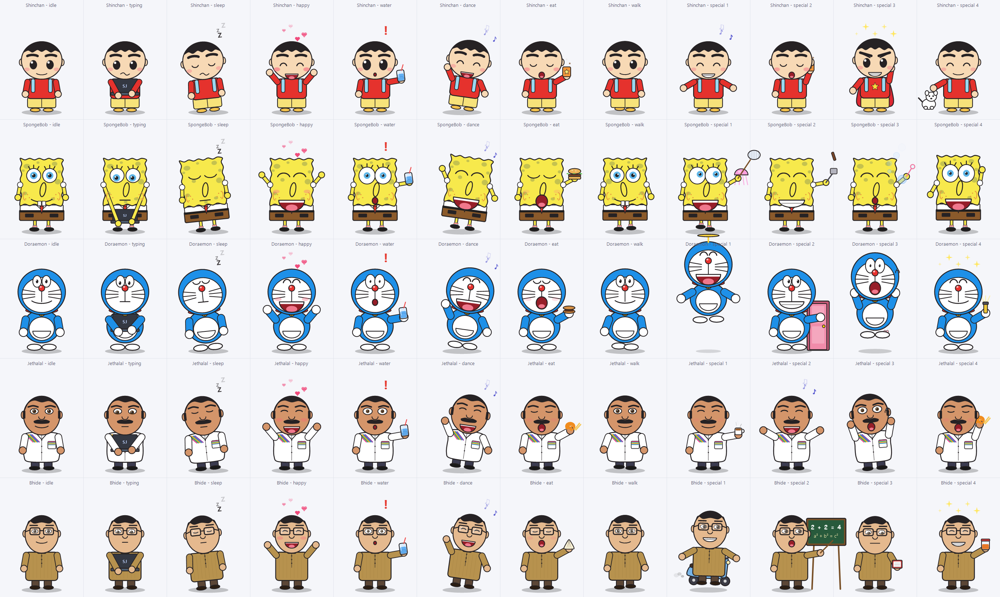

Your desktop toon companion - Shinchan, SpongeBob, Doraemon, Jethalal and Bhide on your screen. Reacts when you type, reminds you to drink water, learns your routine, and jokes in English, Hindi and Hinglish.

| Left-click the buddy | It talks and reacts. During a water reminder a click means "I drank" and logs a sip. |
|---|---|
| Double-click | Pet it. It loves that (and remembers). |
| Drag | Move it anywhere on the screen. Its position is remembered. |
| Right-click | The full menu: talk, pet, log water, fun actions, change character, rename, language, water interval, talkativeness, size, settings, start with Windows, always on top, sounds, wander, break reminders, stats, about, hide, exit. |
| Move the mouse | Its eyes follow the cursor and it leans toward it. Hover over it and it blushes and says hello. Zoom the mouse past it and it flinches. |
| Tray icon (near the clock) | Left-click shows the buddy, right-click opens the same menu, double-click hides / shows it. Water reminders also appear as Windows notifications while it is hidden. |
| Ctrl + Alt + B | Hide / show the buddy from anywhere. |
| Close it | Right-click → Exit (or from the tray icon). To keep it in the tray instead, choose Hide. |
It never records what you type. To know that you are typing it only checks whether typing keys are currently pressed and counts the presses; nothing is stored, logged or sent anywhere. There is no keyboard hook, no internet access and no account. Its only files are settings.txt and brain.txt in %APPDATA%\SJ Buddy. Delete that folder to reset everything.
Create a text file named my-lines.txt next to SJ Buddy.exe (or in %APPDATA%\SJ Buddy). One entry per line:
character|category|english|hindi|hinglish
Example: jethalal|quip|Bapuji is watching. Work!|बापूजी देख रहे हैं। काम करो!|Bapuji dekh rahe hain. Kaam karo!
| "SJ Buddy.exe" --settings | Opens the Settings window (also works while it is already running). |
|---|---|
| "SJ Buddy.exe" --stats | Opens the Stats window. |
| Pendrive mode | Put an empty file named portable.txt next to the exe and it keeps its settings next to the exe instead of in %APPDATA%. |
| Rebuild from source | Run build.bat in the source folder. It needs only Windows itself (the C# compiler that ships with .NET Framework 4.x). |
